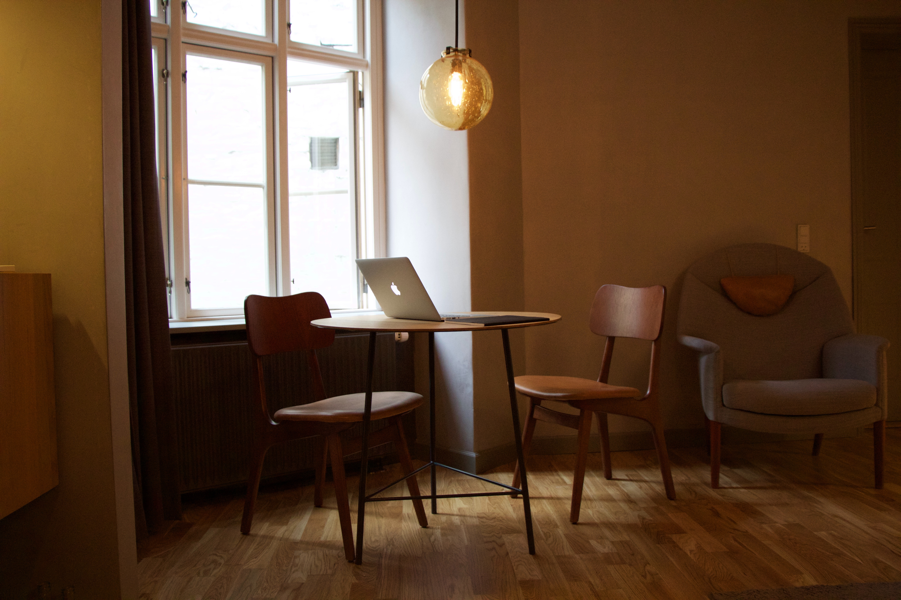
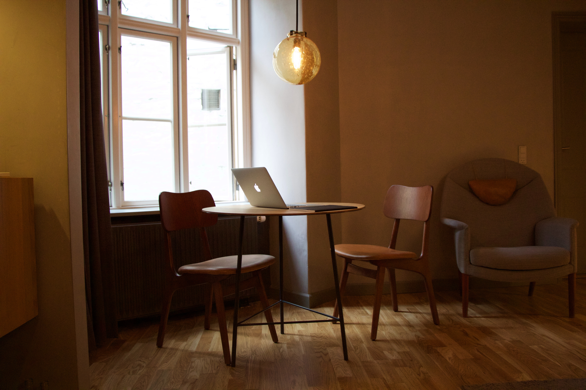

Inspireer met één van onze vergaderzalen.
Nastuh Abootalebi
Als vergaderen in stijl uw ding is, is de Nastuh Abootalebi de inspirerende vergaderomgeving van uw dromen.

 

Has anyone ever said, 'I wish I could go to more meetings today'?
Hoe ons verhaal begon.
Deze toren, die de Haarlemse industriewijk Waarderpolder siert, is een zogenaamde straalverbindingstoren en stamt uit 1972. Deze toren is 112 meter hoog en werd binnen vijfentwintig dagen gebouwd. In eerste instantie zorgde hij voor verbinding tussen Nederhorst den Berg en Rijkskuststation IJmuiden, een maand later werd de toren ingeschakeld voor het telefoonverkeer Haarlem-Amsterdam, en na een jaar werd de toren aangesloten op het ringnet voor heel Nederland. Tot de komst van de eerste straalverbindingen voor telefonie, werden gesprekken binnen Nederland altijd via kabels overgebracht. Maar wat via koperdraad mogelijk is kan ook met een radiogolf | Lees meer…